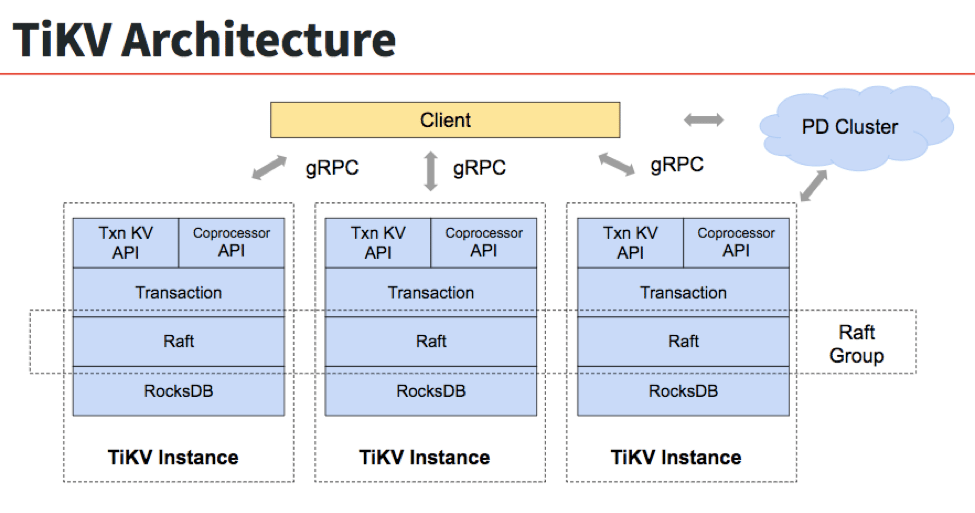

Introduction
TiKV is a distributed, transactional key-value database. It has been widely adopted in many critical production environments, see the TiKV adopters. It has also been accepted by CNCF as a Sandbox project in August, 2018.
TiKV is fully ACID compliant and features automatic horizontal scalability, global data consistency, geo-replication, and many other features. It can be used as a building block for other high-level services. For example, we have already used TiKV to support TiDB - a next-generation HTAP database.
In this book, we will introduce everything about TiKV, including why we built it and how we continue to improve it, what problems we have met, what the core technologies are and why, etc. We hope that through this book, you can develop a deep understanding of TiKV, build your knowledge of distributed programming, or even get inspired to build your own distributed system. :-)
History
In the middle of 2015, we decided to build a database which solved the scaling problem of MySQL. At that time, the most used way was to build a proxy on top of the MySQL servers, but we didn't (and still don't!) think a proxy was an elegant way.
As far as we knew, the proxy had following problems:
- Building a proxy on top of the MySQL servers cannot guarantee the ACID compliance. Notably, the cross-node transactions are not supported natively.
- It poses great challenges for business flexibility because the users have to worry about the data distribution and design their sharding keys carefully to avoid inefficient queries.
- The high availability and data consistency of MySQL can't be guaranteed easily based on the traditional Master-Slave replication.
Although building a proxy based on MySQL directly might be easy at the beginning, we still decided to chose another way, a more difficult path - to build a distributed, MySQL compatible database from scratch.
Fortunately, Google met the same problem and had already published some papers to describe how they built Spanner and F1 to solve it. Spanner is a globally distributed, externally consistent database and F1 is a distributed SQL database based on Spanner. Inspired by Spanner and F1, we knew we could do the same thing. So we started to build TiDB - a stateless MySQL layer like F1. After we released TiDB, we knew we need a Spanner-like database and then we began to develop TiKV.
Architecture
Following is the architecture of TiKV:

According to the picture, there are three TiKV instances in the cluster and each instance uses one RocksDB to save data. On top of RocksDB, we use Raft consensus algorithm to replicate the data. Mostly, we should use at least three replicas to keep data safe and consistent, and these replicas form a Raft group.
We use the traditional MVCC mechanism and build a distributed transaction layer above the Raft layer. We also provide a Coprocessor framework for the users to push down their computing logic to the storage layer and let TiKV calculate directly and return the result.
All the network communications are through gRPC so that the contributors can develop their own clients easily.
The whole cluster is managed and scheduled by a central service - Placement Driver(PD).
As you can see, the hierarchy of TiKV is clear and easy to understand, and we will give more detailed explanation later.